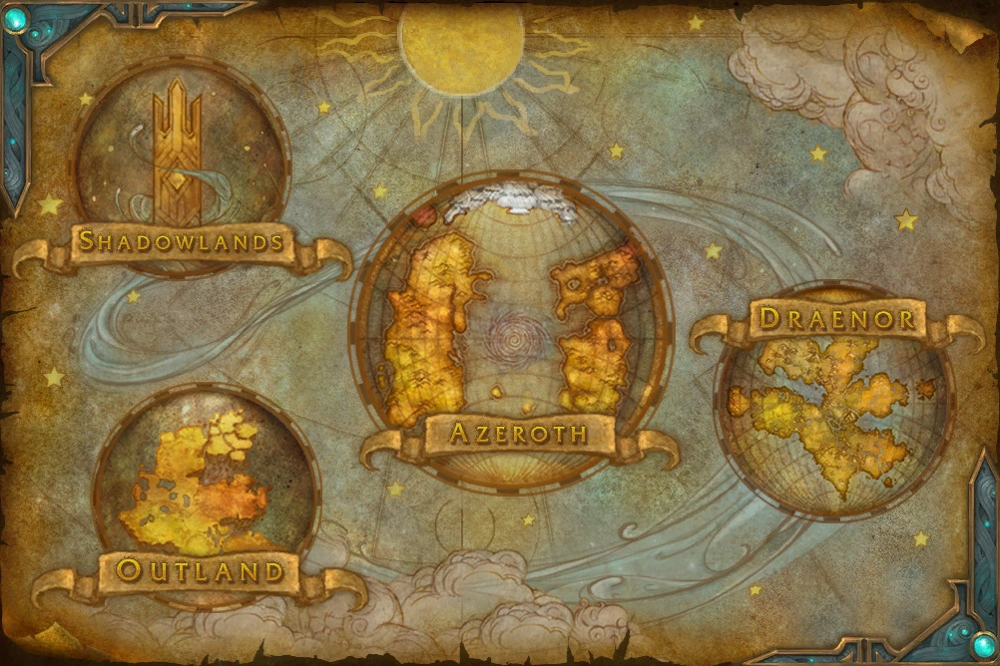

World of Warcraft (abreviado como WoW, literalmente en español
Mundo del arte de la guerra) es un videojuego de rol multijugador
masivo en línea (MMORPG) desarrollado por Blizzard Entertainment. Es el cuarto
juego lanzado establecido en el universo fantástico de Warcraft,
el cual fue introducido por primera vez por Warcraft: Orcs & Humans
en 1994. World of Warcraft transcurre dentro del mundo de Azeroth,
cuatro años después de los sucesos finales de la anterior entrega de
Warcraft, Warcraft III: The Frozen Throne.
MUNDO:
Azeroth
continentes de azeroth:
Clic en la imagen para ampliarla:
Los continentes de Azeroth hasta la fecha se dividen en 4 grandes
continentes y 3 archipielagos que constituyen un solo continente
insular, como se muestra en la imagen superior, al norte se encuentra Rasganorte , y de izquierda a derecha Kalimdor, la vorágine, las islas (islas abruptas, zandalar y kul tiras), los reinos del este y al sur Pandaria.
Planetas Exteriores: World of Warcraft no sólo se limita a un mundo, sino que hay diferentes
mundos expandidos según su LORE (historia canónica), todos con un gran
contenido para explorar:

Estos se enumeran así: las Shaowlands, o el inframundo, es el mundo
espiritual del juego, Outland o terrallende, un mundo moribundo, el
propio Azeroth, y Draenor, mundo natal de los orcos al que se accede
viajando en el tiempo, posteriormente, Draenor se convertiría en terrallende.
Facciones principales del juego:
La Alianza:
Clic en la imagen para más información